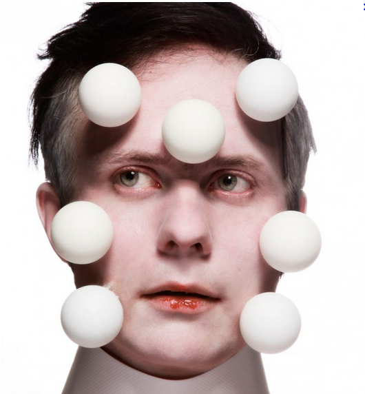
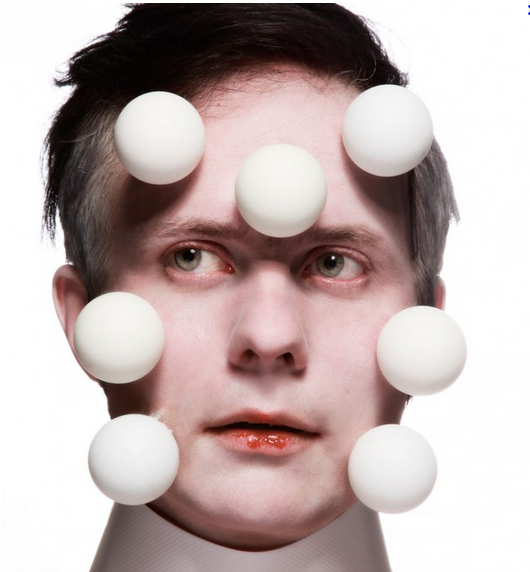
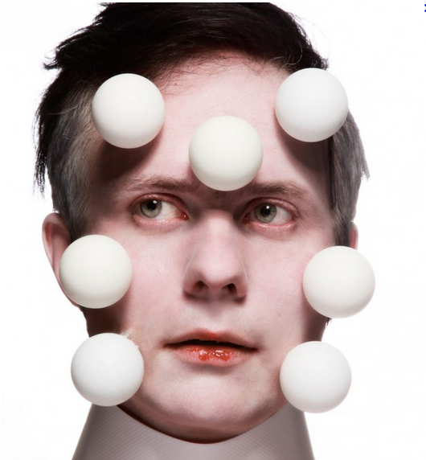
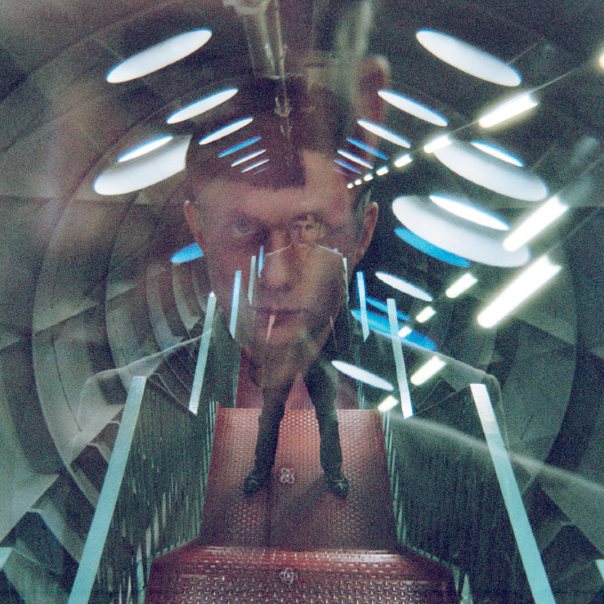
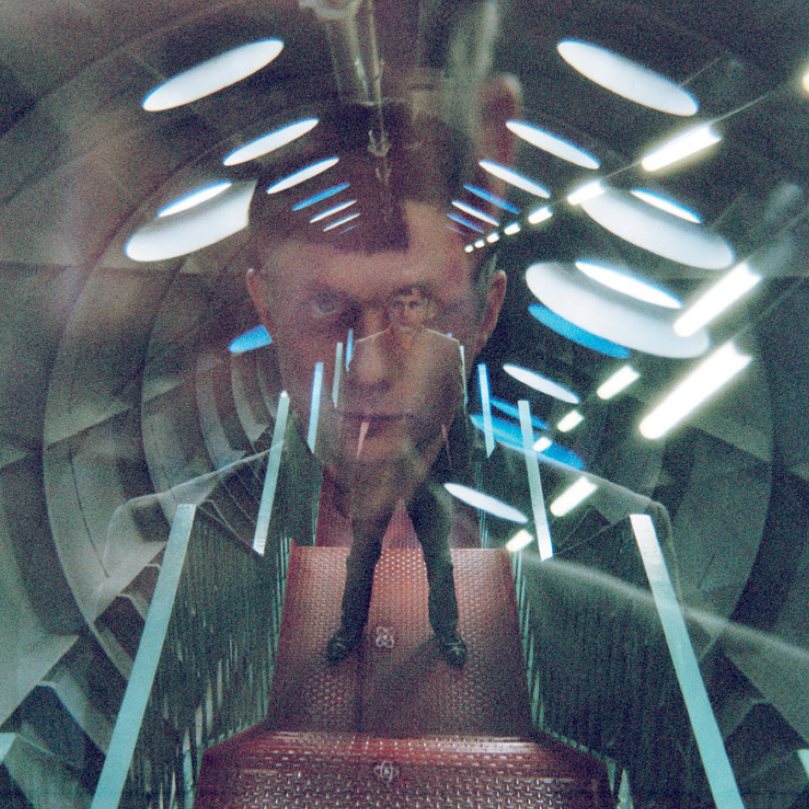

ce maitre FK FELIX KUBIN -ABOUT-  ARTICLES
ce maitre
FK
FELIX KUBIN -ABOUT-  ARTICLES
FELIX KUBIN -ABOUT-

THE DRONE liens Felix Kubin: Orphée Mécanique  txt normal txt gras liens
THE DRONE liens

txt normal txt gras
liens